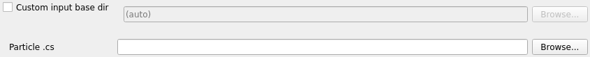
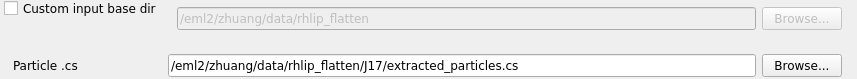
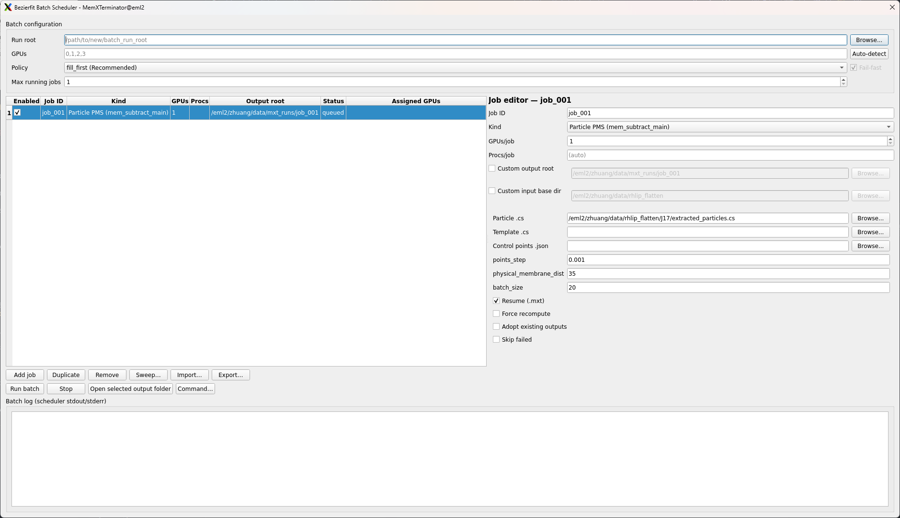
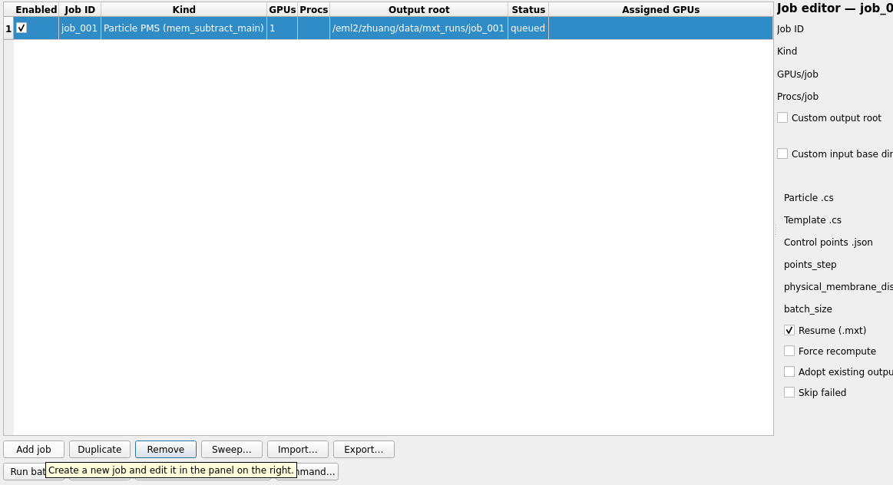
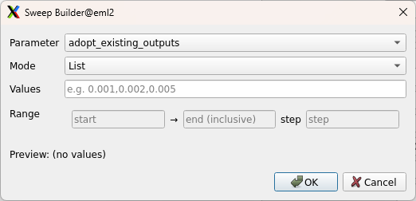
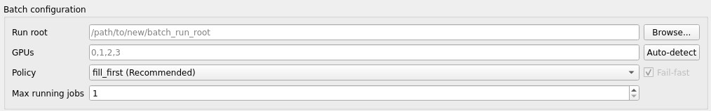
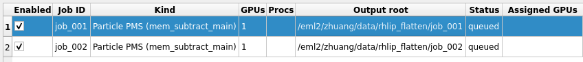

Bezierfit Batch Scheduler¶
1 Introduction¶
The Bezierfit Batch Scheduler allows you to run multiple membrane subtraction jobs in parallel with intelligent GPU resource management. This is especially useful when you need to:
- Process multiple datasets simultaneously
- Run parameter sweeps to find optimal settings (e.g., different
points_stepvalues) - Coordinate dependent workflows (e.g., run Particle Membrane Subtraction first, then Micrograph Membrane Subtraction)
The scheduler handles GPU allocation automatically, ensuring jobs don't compete for the same GPU resources.
Prerequisites
This tutorial assumes MemXTerminator is already installed and usable on your system. If not, please follow the Installation tutorial first.
For single-job runs, continue to use the standard Particle Membrane Subtraction and Micrograph Membrane Subtraction interfaces.
2 Core Concepts¶
2.1 Job-Level Parallelism¶
The Batch Scheduler runs multiple independent jobs concurrently. Each job is a complete membrane subtraction task (Particle PMS, Micrograph MMS, or Membrane Analysis) with its own parameters and output directory.
Unlike single-job parallelism (where one job uses multiple GPUs/processes), job-level parallelism lets you queue many jobs and have them execute automatically as GPU resources become available.
2.2 GPU Scheduling¶
The scheduler manages a pool of available GPUs and allocates them to jobs based on your configuration:
gpus: A list of GPU IDs available to the scheduler (e.g.,[0, 1, 2, 3]). These correspond to the physical GPU indices on your system.max_running_jobs: Maximum number of jobs that can run simultaneously.policy: How GPUs are assigned to jobs:fill_first(default): Assigns jobs to the lowest-index available GPUs first. Good for keeping some GPUs free for other users.round_robin: Spreads jobs evenly across GPUs in rotation. Good for balanced utilization.
Internally, the scheduler sets CUDA_VISIBLE_DEVICES for each job, so the job only sees its assigned GPU(s).
2.3 Output Isolation¶
Each job writes to its own isolated directory specified by output_root. This prevents jobs from interfering with each other and makes it easy to compare results from different parameter settings.
2.4 Input Base Directory¶
CryoSPARC .cs files and STAR files often contain relative paths (e.g., J220/extract/particles.mrcs). Because the batch scheduler runs each job with its working directory set to <output_root>, these relative paths may fail to resolve correctly, resulting in FileNotFoundError.
The input_base_dir argument solves this by specifying the directory from which relative paths inside the input files should be resolved:
- Auto-inference (default): The scheduler automatically infers
input_base_dirfrom your primary input file. For CryoSPARC layouts (where the.csor.starfile lives directly under aJ###/folder), it infers the parent directory of thatJ###/folder (e.g.,/data/project/if the input is/data/project/J220/particles_selected.cs). - Manual override: You can explicitly set
input_base_dirif the auto-inferred value is incorrect or if your file layout differs from the standard CryoSPARC structure.


Auto-parse Input Base DirectoryFor example, if you run two PMS jobs with different points_step values, you might use:
- Job 1:
output_root = /runs/pms_step_0.001 - Job 2:
output_root = /runs/pms_step_0.002
The subtracted particle stacks will appear under <output_root>/subtracted/... for each job.
3 Using the GUI¶
3.1 Open the Interface¶
Open the MemXTerminator main program, select the Bezierfit mode, then click Batch Scheduler to enter the Batch Scheduler interface:

Bezierfit Batch Scheduler interface3.2 Add Jobs¶
Click Add job to create a new job entry. You can add multiple jobs of different types:
- Particle PMS - Particle Membrane Subtraction
- Micrograph MMS - Micrograph Membrane Subtraction
- Membrane Analyze - Bezier curve fitting on 2D averages

Adding a new job to the batchFor each job, configure:
- Job ID: A unique identifier (letters, numbers, underscores, periods, hyphens)
- Output Root: Directory where this job's outputs will be written
- GPUs: Number of GPUs required by this job
- Procs: Number of worker processes (defaults to number of GPUs)
- Input Base Dir: Base directory for resolving relative paths in input files (see below)
- Job-specific parameters: File paths and processing options
Per-Job Input Base Directory
Each job has an Input Base Dir field with a Custom input base dir checkbox and a Browse button.
- Default (recommended): Leave Custom input base dir unchecked. The field shows the auto-inferred value (read-only) based on your primary input file.
- Manual override: If the auto-inferred path is incorrect (e.g., non-standard CryoSPARC layout), check Custom input base dir and browse to the correct CryoSPARC project root (the directory containing the
J###/folders) or the directory that makes the relative paths inside your.cs/.starresolve correctly.
3.3 Create Parameter Sweeps¶
To test multiple parameter values, use the Sweep... button:
- Select the job you want to sweep
- Click Sweep...
- Choose the parameter to vary (e.g.,
points_step) - Enter values as a comma-separated list (e.g.,
0.001,0.002,0.005) or specify a range with start, end, and step - Click Generate

Creating a parameter sweep with the Sweep builderThe sweep builder will create multiple jobs automatically, each with a unique job ID and output root based on the parameter value.
Manual Alternative
You can also create sweeps manually by duplicating a job (select it and click Duplicate), then editing the parameters and output root for each copy.
3.4 Configure Scheduler Settings¶
Before launching, configure the scheduler settings:
- GPUs: Enter available GPU IDs (e.g.,
0,1,2,3) - Max Running Jobs: Limit concurrent jobs (useful if you want to reserve some GPUs)
- Policy: Choose
fill_firstorround_robin

Configuring scheduler settings3.5 Run and Monitor¶
Click Run batch to start the batch. The interface will show real-time status:
- Queued: Jobs waiting to run
- Running: Jobs currently executing (with assigned GPUs shown)
- Success: Completed jobs
- Failed: Jobs that encountered errors

Monitoring batch execution progressThe bottom panel shows the batch scheduler log. For per-job logs, open the job's output folder and inspect scheduler_stdout.log / scheduler_stderr.log inside that job's output_root.
3.6 Stop / Cancel¶
To stop the batch:
- Stop: Terminates the batch scheduler; running jobs receive SIGTERM and have up to ~30 seconds to clean up
- Jobs that haven't started yet will be marked as canceled
4 Using the CLI¶
4.1 Create a Batch Specification File¶
The CLI uses a JSON specification file. Here's a minimal example that runs two PMS jobs with different points_step values:
{
"scheduler": {
"gpus": [0, 1, 2, 3],
"policy": "fill_first",
"max_running_jobs": 2,
"fail_fast": true
},
"jobs": [
{
"job_id": "pms_step_0.001",
"kind": "bezierfit_particle_pms",
"enabled": true,
"output_root": "/path/to/runs/pms_step_0.001",
"resources": {
"gpus": 1,
"procs": null
},
"args": {
"particle": "/path/to/particles_selected.cs",
"template": "/path/to/templates_selected.cs",
"control_points": "/path/to/control_points.json",
"points_step": 0.001,
"physical_membrane_dist": 35,
"input_base_dir": "/path/to/cryosparc_project",
"resume": true
}
},
{
"job_id": "pms_step_0.002",
"kind": "bezierfit_particle_pms",
"enabled": true,
"output_root": "/path/to/runs/pms_step_0.002",
"resources": {
"gpus": 1,
"procs": null
},
"args": {
"particle": "/path/to/particles_selected.cs",
"template": "/path/to/templates_selected.cs",
"control_points": "/path/to/control_points.json",
"points_step": 0.002,
"physical_membrane_dist": 35,
"input_base_dir": "/path/to/cryosparc_project",
"resume": true
}
}
]
}
Exported JSON includes input_base_dir
When you export a batch specification from the GUI, input_base_dir is explicitly included in each job's args for reproducibility, even if it was auto-inferred.
4.2 Run the Batch¶
Execute the scheduler with either of the following:
MemXTerminator bezierfit-batch \
--spec /path/to/batch_spec.json \
--state /path/to/scheduler_state.json
Or:
python -u -m memxterminator.bezierfit.scheduler.cli \
--spec /path/to/batch_spec.json \
--state /path/to/scheduler_state.json
Optional CLI overrides:
--gpus 0,1,2,3- Override GPU list--policy round_robin- Override scheduling policy--max_running_jobs 2- Override max concurrent jobs
Note
In the JSON spec, setting "procs": null (or omitting procs) lets the scheduler choose a safe default (typically procs = gpus for that job).
4.3 Job Kinds and Arguments¶
Particle PMS (bezierfit_particle_pms)¶
| Argument | Required | Description |
|---|---|---|
particle |
Yes | Path to particles .cs file |
template |
Yes | Path to templates .cs file |
control_points |
Yes | Path to control_points.json |
points_step |
Yes | Bezier curve sampling step (e.g., 0.001) |
physical_membrane_dist |
Yes | Membrane thickness in Å (e.g., 35) |
batch_size |
No | Minibatch size (default: 20) |
input_base_dir |
No | Base directory for resolving relative paths in input files (auto-inferred from input file if not set) |
resume |
No | Resume from .mxt checkpoints (default: true) |
force |
No | Force recompute all (default: false) |
Micrograph MMS (bezierfit_micrograph_mms)¶
| Argument | Required | Description |
|---|---|---|
particle |
Yes | Path to particles_selected.star |
batch_size |
No | Minibatch size (default: 30) |
input_base_dir |
No | Base directory for resolving relative paths in input files (auto-inferred from input file if not set) |
resume |
No | Resume from .mxt checkpoints (default: true) |
require_particle_mxt |
No | Require PMS completion (default: true) |
MMS Dependency on PMS
When require_particle_mxt is true, MMS jobs will report BLOCKED_DEPENDENCY if the corresponding particle stacks haven't been subtracted yet. See Troubleshooting for details.
4.4 Micrograph MMS Example¶
Here's an example that includes both PMS and MMS jobs:
{
"scheduler": {
"gpus": [0, 1],
"policy": "fill_first",
"max_running_jobs": 2,
"fail_fast": true
},
"jobs": [
{
"job_id": "pms_dataset1",
"kind": "bezierfit_particle_pms",
"enabled": true,
"output_root": "/runs/pms_dataset1",
"resources": {"gpus": 1, "procs": null},
"args": {
"particle": "/data/particles_selected.cs",
"template": "/data/templates_selected.cs",
"control_points": "/data/control_points.json",
"points_step": 0.001,
"physical_membrane_dist": 35
}
},
{
"job_id": "mms_dataset1",
"kind": "bezierfit_micrograph_mms",
"enabled": true,
"output_root": "/runs/mms_dataset1",
"resources": {"gpus": 1, "procs": null},
"args": {
"particle": "/data/particles_selected.star",
"batch_size": 30,
"require_particle_mxt": true
}
}
]
}
Note
If you run PMS and MMS jobs in the same batch with require_particle_mxt: true, the MMS job may initially report blocked dependencies while PMS is still running. Once PMS completes, re-running the batch (or using resume) will allow MMS to proceed.
5 Log Files and State¶
5.1 Scheduler-Level Files¶
Located in your run root directory (where you launched from or specified):
| File | Description |
|---|---|
bezierfit_batch.run.out |
Main scheduler stdout/stderr log |
scheduler_state.json |
Real-time scheduler state (updated every ~200ms) |
The scheduler_state.json file contains:
- Current job statuses (queued, running, success, failed, canceled)
- Free GPU list
- Job counts and progress
- Timestamps for each job
5.2 Per-Job Files¶
Located in each job's output_root directory:
| File | Description |
|---|---|
scheduler_stdout.log |
Job's captured stdout |
scheduler_stderr.log |
Job's captured stderr |
job_spec_resolved.json |
Resolved job specification (for debugging) |
job_result.json |
Final job result and metadata |
5.3 Output Structure¶
For PMS jobs, subtracted particles appear in:
<output_root>/
└── subtracted/
├── xxx_subtracted.mrcs
├── xxx_subtracted.mrcs.mxt
└── ...
6 Troubleshooting¶
FileNotFoundError on Relative Paths (J###/extract/...)¶
If jobs fail with errors like:
FileNotFoundError: [Errno 2] No such file or directory: 'J220/extract/particles.mrcs'
This occurs because CryoSPARC .cs and STAR files often store relative paths (e.g., J220/extract/...). The batch scheduler runs each job with its working directory set to <output_root>, so these relative paths cannot be resolved.
Solution: Set input_base_dir to your CryoSPARC project root (the directory containing J### folders):
- GUI: In the job's Input Base Dir field, check Custom input base dir and browse to your CryoSPARC project directory.
- CLI/JSON: Add
"input_base_dir": "/path/to/cryosparc_project"to the job'sargssection.
In most cases, the auto-inferred value should work correctly. If you see this error, verify that the inferred path matches your CryoSPARC project layout.
CuPy/CUDA Not Available¶
If jobs fail with CUDA-related errors:
- Verify your CUDA installation (see Installation)
- Check that
CUDA_VISIBLE_DEVICESisn't already set in your environment - Ensure the GPU IDs in your spec are valid for your system
BLOCKED_DEPENDENCY¶
MMS jobs report BLOCKED_DEPENDENCY when particle stacks aren't ready:
>>> BLOCKED_DEPENDENCY missing_stack=/path/to/stack.mrcs
REASON: MISSING_PARTICLE_STACK
Causes and solutions:
| Reason | Solution |
|---|---|
MISSING_PARTICLE_STACK |
PMS job hasn't created the output yet. Wait for PMS to complete. |
MISSING_PARTICLE_MXT |
PMS job didn't write .mxt checkpoint. Re-run PMS or set require_particle_mxt: false. |
PARTICLE_MXT_STATUS_NOT_SUCCESS |
PMS job failed. Check PMS logs and fix the issue. |
GPU Out of Memory (OOM)¶
If jobs fail with CUDA OOM errors:
- Reduce
max_running_jobs: Fewer concurrent jobs = more memory per job - Reduce
procs: Fewer worker processes per job - Reduce
batch_size: Smaller batches require less memory - Request more GPUs per job: Spread computation across multiple GPUs
Resume Behavior¶
Jobs use .mxt checkpoint files for resume:
- Resume works: Set
"resume": truein job args. Already-completed particle stacks are skipped. - Force recompute: Set
"force": trueto ignore checkpoints and reprocess everything. - Adopt existing outputs: Use
"adopt_existing_outputs": trueif you have outputs from an older run without.mxtfiles.
Stopping a Batch¶
From GUI: Click the Stop button. Running jobs receive SIGTERM and have up to 30 seconds to clean up.
From CLI: Send SIGTERM to the scheduler process (Ctrl+C or kill <pid>). The PID is stored in bezierfit_batch.pid.
Stopped jobs can be resumed later by re-running with "resume": true.
7 Summary¶
The Bezierfit Batch Scheduler streamlines multi-job workflows:
- Plan your jobs: Define job IDs, output roots, and parameters
- Configure GPU scheduling: Set available GPUs, max concurrent jobs, and allocation policy
- Run and monitor: Track progress via GUI or state files
- Review outputs: Each job's results are isolated in its own
output_root